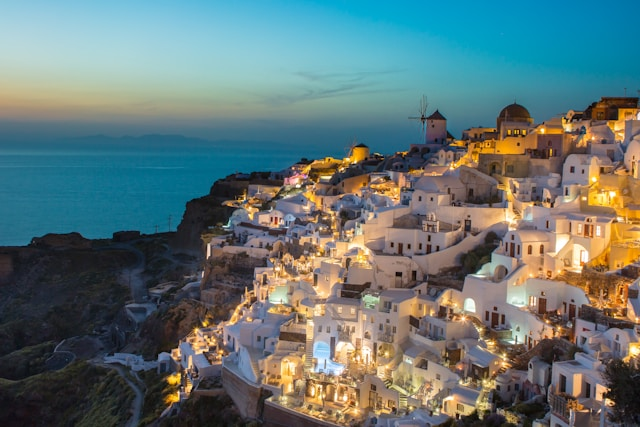

Bora Bora, French Polynesia
A paradise island with overwater bungalows and clear blue waters.
Photo by Hugues de BUYER-MIMEURE on Unsplash
A paradise island with overwater bungalows and clear blue waters.
Photo by Hugues de BUYER-MIMEURE on Unsplash
Vacation spot which is famous for its white-washed buildings and stunning sunsets.
Photo by James Ting on Unsplash
A breathtaking mountain paradise perfect for skiing, hiking, and stunning scenic views.
A timeless city where ancient ruins like the Colosseum stand alongside vibrant modern culture.
Photo by Caleb Miller on Unsplash
A city of romance and history, home to the iconic Eiffel Tower and world-renowned art at the Louvre.

Photo by Anthony DELANOIX on Unsplash
Barcelona is a vibrant city known for its stunning architecture and rich culture.
Photo by Florian Wehde on Unsplash